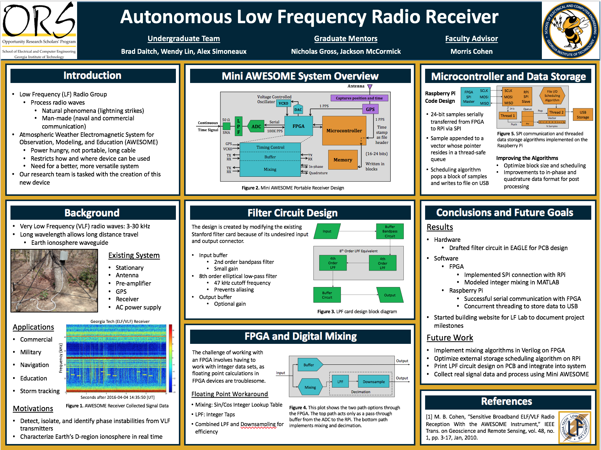

Network for Computational Nanotechnology, West Lafayette, IN
Undergraduate Research Fellow, Dr. Peter Bermel
May 2017 - August 2017
- Published a simulation tool that models radiative cooling, which uses thermal radiation near room temperature to provide passive cooling for devices (Radcool; doi:10.4231/D3DR2PB4W).
- The tool was developed using Rappture, an open source development platform, and Python for the algorithm.
- Deep understanding in PV cells, thermophotovoltaic devices, and radiative cooling.
- Technical paper was published in Purdue Summer Undergraduate Research Fellowship e-Pubs (Paper).
Research poster for the project:

Research presentation:
Georgia Low Frequency Lab, Atlanta, GA
Undergraduate Research Assistant, Dr. Morris Cohen
October 2016 - Present
- Design a portable and efficient system that is able to detect very low frequency wave (3-30kHz) for the purpose of oberservation, modeling and education.
- Create a printed circuit board of an eighth order low pass filter by modifying the currently existing circuit board with Eagle CAD software, and ensuring successful data collection from the antenna and propagation to the ADC.
- Simulate and test circuits for the filter design using LT Spice and NI Multisim.
- Received ORS Best Research Presentation Award in 2016-2017 academic year.
Research poster for the project:

Seattle Central College IEP Marketing Department, Seattle, WA
Student Assistant
March 2014 - June 2015
I have developed strong organization skills by creating the complete instruction munual with Microsoft Access for adding new data into the system. This led to high efficiency in software training for future employees. In addition, I have successfully led over 20 prospective students on campus tours, developing leadership and communication skills.
Ultrafast Biomedical Optics Group, Taipei, Taiwan
Summer Intern, Dr. Tzu-Ming Liu
July 2014 - August 2014
I have worked as a research intern in the Ultrafast Biomedical Optics Group under Dr. Tzu-Ming Liu at National Taiwan University. The goal of my research with this group was to determine whether femtosecond lasers could be used on human skin to detect different kinds of white blood cells. The capability to detect blood cells via a laser would allow doctors to examine a patient's blood without having to draw a blood sample, thereby reducing the number of times a patient would require being stuck with a needle. As an intern, I assisted with human clinical trials and optical inspections. The skills I acquired included isolation of white blood cells, mounting specimens on microscope, and collecting and analyzing nonlinear optical images using femtosecond lasers.